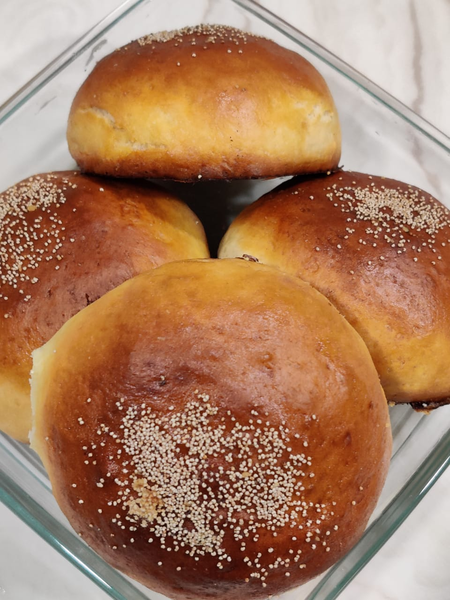
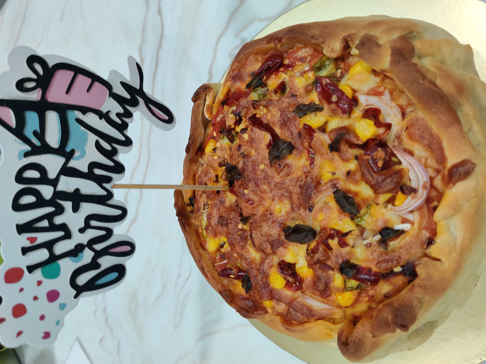
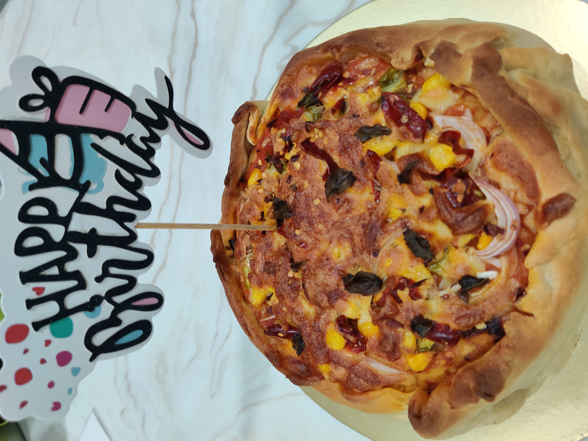
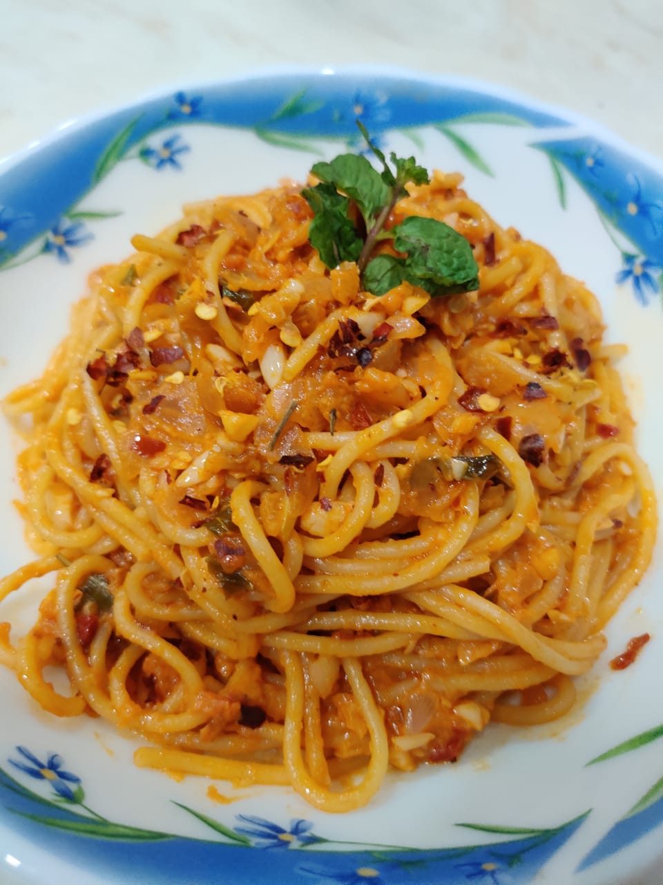
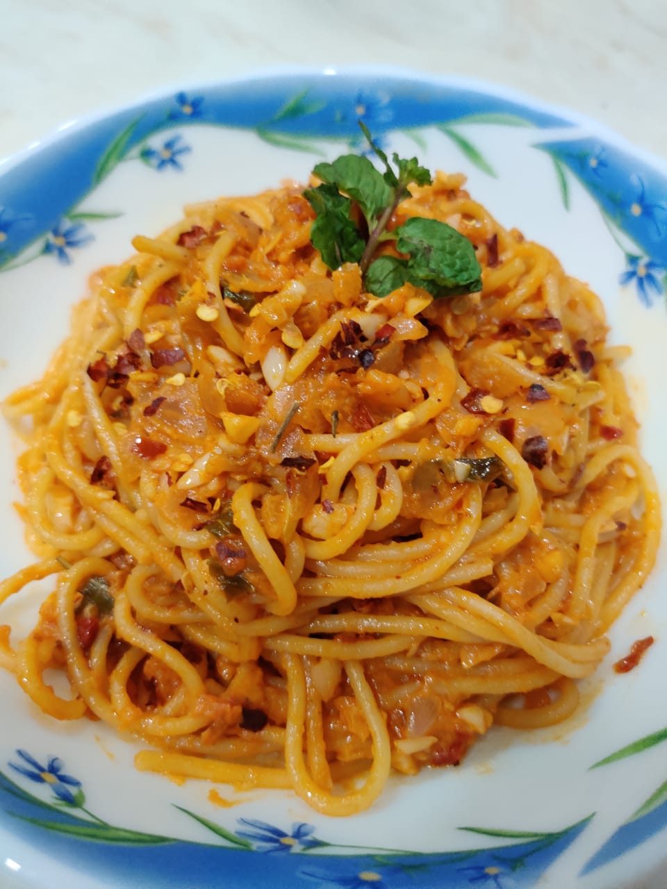

A savoury is the final course of a traditional British formal meal, following the sweet pudding or dessert course. The savoury is designed to "clear the palate" before the port is served. It generally consists of salty and plain elements. Savouries are often served on toast, fried bread or some kind of biscuit or cracker. In Eliza Action's 1845 book Modern Cookery for Private Families, there is just one recipe for savouries which appears to be a proto-croque monsieur, with a small footnote. In the twentieth century, however, you get entire books of the subject, the best being Good Savouries by Ambrose Heath. Savory food is often categorized as anything not inherently sweet. Meat, for instance, is usually savory. Vegetables, in general, are also savory. Snack foods, finger foods and hors d'oeuvres are most often savory, too.


 

 
